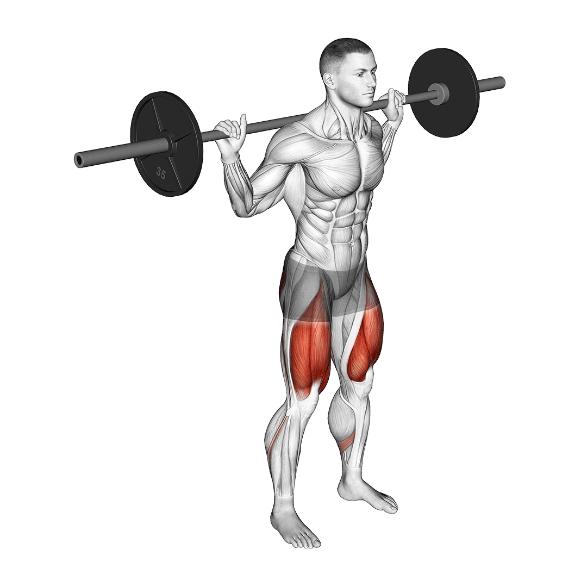

🦵 스쿼트

운동 부위
대퇴사두근, 햄스트링, 둔근, 코어
운동 설명
사전적 정의는 '쪼그려 앉다'이며, 양발을 좌우로 벌리고 서서 발바닥을 바닥에 밀착한 채 등을 펴고
무릎을 구부렸다 폈다 하는 체력 단련 운동을 주로 의미한다. 웨이트 트레이닝에서는 바벨을 어깨에 매고 하기도 한다.
주의사항
- 허리가 너무 꺾거나 굽히지 말고 중립을 유지하며 앉기
- 시선은 정면 유지, 고개 숙이지 말기
- 앉았다가 일어날 때, 무릎이 안쪽보단 바깥쪽을 향한 상태로 일어나기